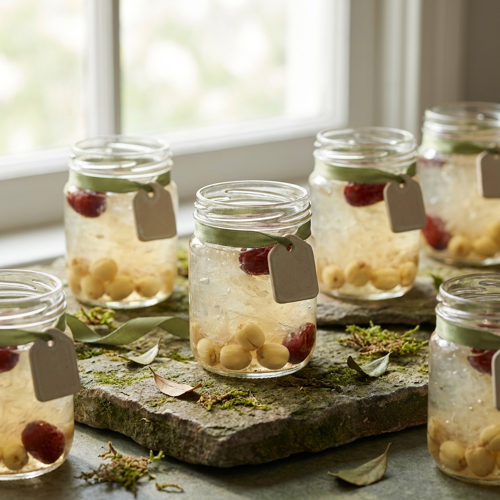

Trang chủ / Blog / Yến chưng sẵn giá bao nhiêu
Yến chưng sẵn giá bao nhiêu 1 hũ?

Yến chưng sẵn giá bao nhiêu 1 hũ? Tại Yến Sào Nhà Ry, yến chưng sẵn có giá từ 55.000đ/hũ 75ml, mỗi hũ đảm bảo 8 gram yến tươi. Khác với yến thô và yến tinh chế tính giá theo 100gr, yến chưng sẵn tính giá theo hũ, mở nắp là dùng ngay, không cần ngâm, không cần nhặt lông, không cần chưng. Bài viết này giải thích con số 8 gram yến tươi trong hũ có ý nghĩa gì, tính chi phí mỗi tuần ra sao, và khi nào bạn nên mua chưng sẵn thay vì mua yến khô về tự chưng.
Một hũ yến chưng sẵn có bao nhiêu gram yến?
Đây là câu hỏi quan trọng nhất khi mua yến chưng sẵn, quan trọng hơn cả giá tiền. Trên thị trường, nhiều nơi chỉ ghi dung tích hũ, ví dụ hũ 70ml hay 75ml, mà không nói rõ trong hũ có bao nhiêu gram yến tươi. Dung tích hũ không nói lên hàm lượng yến, vì phần lớn dung tích là nước chưng. Vì vậy khi mua yến chưng sẵn, bạn nên hỏi rõ một câu: một hũ có bao nhiêu gram yến tươi?
Với yến chưng sẵn Nhà Ry, con số được ghi rõ: mỗi hũ 75ml đảm bảo 8 gram yến tươi. Đây là thông tin mà shop cam kết cho từng hũ, không phải con số chung chung. Bạn có thể xem chi tiết sản phẩm trên trang yến chưng sẵn Nhà Ry.
Tính chi phí mỗi tuần khi ăn yến chưng sẵn
Một hũ từ 55.000đ dùng một lần là hết một hũ. Nếu bạn ăn vừa phải, khoảng 2-3 lần mỗi tuần, chi phí mỗi tuần sẽ rơi vào khoảng 110.000đ đến 165.000đ. Cách tính này giúp bạn hình dung ngân sách hàng tuần thay vì chỉ nhìn vào giá niêm yết của một hũ.
So với việc mua yến khô về tự chưng, yến chưng sẵn không cần bạn bỏ thời gian ngâm nở, nhặt lông hay chưng yến. Bạn chỉ cần mở nắp và dùng. Đổi lại, giá mỗi lần dùng của yến chưng sẵn thường cao hơn so với tự chưng tại nhà, vì đã tính cả công chưng và đóng hũ. Đó là sự đánh đổi giữa tiền và thời gian, và mỗi người sẽ có lựa chọn khác nhau tùy hoàn cảnh.
Khi nào nên mua yến chưng sẵn?
Yến chưng sẵn phù hợp nhất trong bốn trường hợp. Thứ nhất, bạn muốn dùng thử yến lần đầu mà chưa muốn mua cả 100gr yến khô. Một hũ từ 55.000đ là cách thử ít tốn kém nhất để biết mình có hợp với yến hay không. Thứ hai, bạn bận rộn, không có thời gian ngâm và chưng yến tại nhà. Thứ ba, bạn cần mua yến làm quà biếu, quà tặng mà người nhận có thể dùng ngay, không cần chuẩn bị gì thêm. Thứ tư, bạn mua cho người lớn tuổi trong nhà, những người không tiện tự chưng yến.
Bạn có thể đọc thêm bài yến sào cho bà bầu: ăn được không, ăn thế nào và bài yến sào làm quà biếu: chọn loại nào, giá bao nhiêu nếu đang mua yến để tặng người thân.
Khi nào nên mua yến khô về tự chưng?
Bạn nên mua yến khô về tự chưng khi bạn ăn yến thường xuyên, khoảng 2-3 lần mỗi tuần trong thời gian dài, và bạn có thời gian để ngâm nở và chưng yến tại nhà. Khi đó, mua theo 100gr sẽ giúp chi phí mỗi lần dùng thấp hơn so với mua từng hũ chưng sẵn. Yến thô có giá từ 2.000.000đ/100gr, phù hợp với người đã quen sơ chế và thích tự tay làm sạch tổ yến. Yến tinh chế giá từ 2.900.000đ/100gr, đã rút lông và làm sạch, mua về chỉ việc ngâm rồi chưng, phù hợp với người bận rộn hơn. Bạn có thể đối chiếu kỹ hai loại trong bài yến thô hay yến tinh chế: nên mua loại nào.
Cách chưng yến tại nhà cũng không khó như nhiều người nghĩ. Bạn có thể xem hướng dẫn trong bài cách chưng yến đúng: chưng đường phèn, hạt sen, táo đỏ.
Lưu ý khi mua yến chưng sẵn
Trước khi mua yến chưng sẵn ở bất kỳ shop nào, bạn nên hỏi rõ ba điều: một hũ có bao nhiêu gram yến tươi, hũ có dung tích bao nhiêu ml, và yến có được kiểm hàng trước khi nhận hay không. Ba câu hỏi này giúp bạn tránh mua phải hũ yến chỉ ghi dung tích mà không ghi hàm lượng. Bạn cũng nên xem kỹ bảng giá đầy đủ của shop trong bài yến sào giá bao nhiêu 100gr: bảng giá 2026 và đối chiếu với bài mua yến sào ở đâu uy tín: 7 tiêu chí chọn shop trước khi quyết định.
Câu hỏi thường gặp
Yến chưng sẵn giá bao nhiêu 1 hũ?
Yến chưng sẵn Nhà Ry từ 55.000đ/hũ 75ml, mỗi hũ đảm bảo 8 gram yến tươi.
Một hũ yến chưng sẵn có bao nhiêu gram yến?
Mỗi hũ 75ml của Nhà Ry đảm bảo 8 gram yến tươi. Khi mua, bạn nên hỏi rõ hàm lượng yến tươi thay vì chỉ nhìn dung tích hũ.
Mua yến chưng sẵn hay mua yến về tự chưng thì rẻ hơn?
Yến chưng sẵn tiện dùng ngay, phù hợp khi bạn bận rộn hoặc muốn dùng thử. Mua yến thô từ 2.000.000đ/100gr hoặc yến tinh chế từ 2.900.000đ/100gr về tự chưng phù hợp khi bạn dùng thường xuyên và có thời gian sơ chế.
Cần tư vấn? Nhắn Zalo 0986.39.22.00
Nhắn Zalo để được tư vấn chọn yến chưng sẵn hay yến khô, và báo giá theo từng mẻ hàng hiện có.
Nhắn Zalo ngayĐịa chỉ: E20 đường 672, Phường Phước Long, TP Hồ Chí Minh
Hotline/Zalo: 0986.39.22.00 — Facebook: Yến Sào Nhà Ry